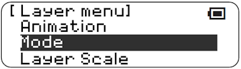
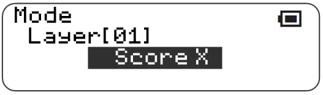
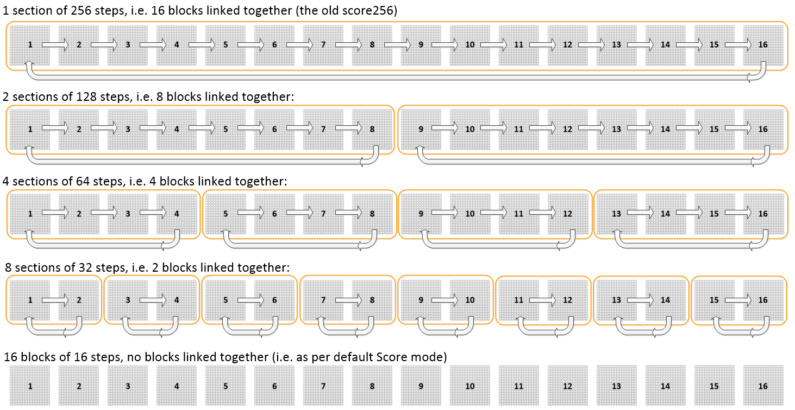
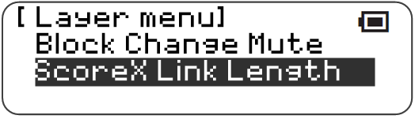
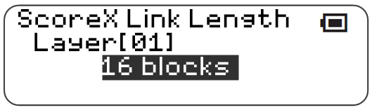
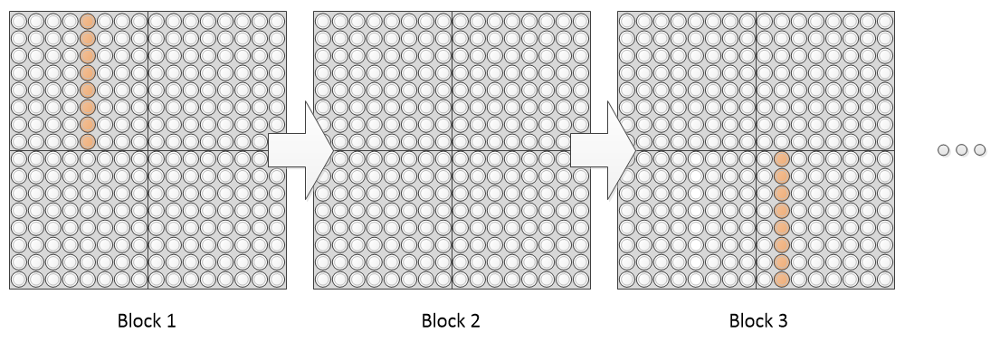
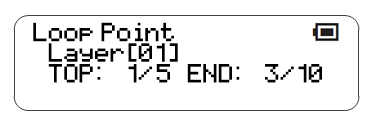
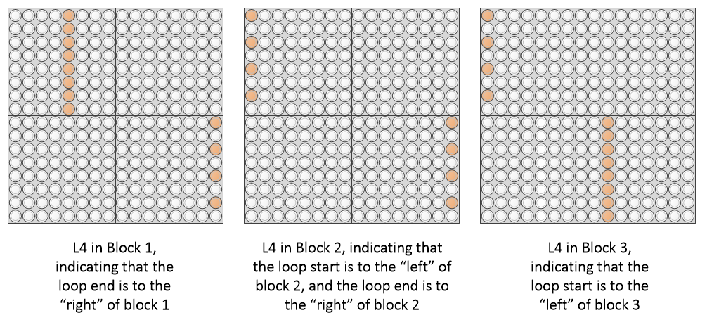
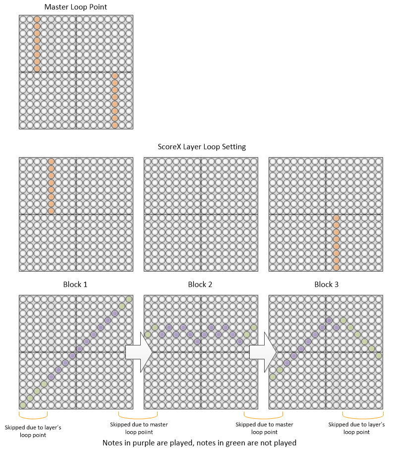

Score X : Extended score
This function adds a new layer type - a score mode that groups the normal 16 blocks of 16 steps differently, allowing up to 1 section of 256 steps.
This layer type can be selected via changing the layer mode
|  |  |
|---|
The normal score mode can be thought of as 16 blocks of 16 steps. ScoreX allows this to be grouped into a number of different configurations:
- 1 section of 256 steps, linking 16 blocks together (the old score-256 behavior)
- 2 sections of 128 steps, linking 8 blocks together
- 4 sections of 64 steps, linking 4 blocks together
- 8 sections of 32 steps, linking 2 blocks together
- 16 sections of 16 steps, identical to the default score mode
This is shown below:

The grouping can be selected from within the Layer menu:
|  |  |
|---|
Fundamentally, this is implemented via chaining the blocks together. Loop points are set within the linked section of blocks; for example, the following shows a loop range setting that would be valid for 4, 8 or 16 block links, but not for 2-block links.

Importantly, this means that there can be a difference between the block currently visible and being edited, and the block currently playing.
The behavior of this new layer is quite complex, and a few changes have been made to the “normal” score layer type to support this.
Changing the current block with [R5] will change the currently playing block, for score, random, draw etc. as normal. For scoreX, while it will change the block into which notes are entered (the “current block”), it will only change scoreX’s playing block if the block change takes you into the next section.
Changing the current block via remote methods - i.e. a meta controller block change, or a block change MIDI message - will not change the currently visible block for a scoreX. This is so that this layer can be used as a sequencer with block change meta controllers.
The LCD display of loop start (top) / loop end in normal score, and scoreX, has been changed to include both the block, and the position within the block, for the loop start and end points. This is shown below, corresponding to the loop point example above. For normal score, you can just ignore the first value as it simply reports the current block. I haven’t yet worked out a way of suppressing this information in normal score mode.

To set loop points, [L4] is used as normal. Pressing [L4] and a key will set the start or end points, as normal, but at this block. For example, using a scoreX layer to create the 38 step pattern shown above:
- In block 1, press [L4] and the top half of the fifth column. This sets the LOOP TOP to 1 / 5
- Switch to block 3 using [R5] and a key from the third column
- Press [L4] and the bottom half of the 10th column. This sets the LOOP END to 3 / 10.
A loop point “off screen” is displayed with a broken line at the edge of the current block, either the left edge, indicating that the loop point is on a lower block number than the current block, or the right edge, indicating that the loop point is on a higher block number than the current edge. For example, pressing [L4] when the current block is 1, 2 or 3 gives the results below.

If loop indicators are on, then when the currently playing position is not on the currently displayed block, the loop indicators will flash at the left of right edge of the block indicating the direction in which the currently playing position is.
Animations for “off screen” notes aren’t played.
ScoreX respects master loop points in a different way to the normal score. The master loop setting does not overwrite the scoreX loop points. Instead, the master loop points are viewed as defining the length of the bar; playing a scoreX layer with loop points that span blocks will skip from the master loop end of one block to the master loop start of the next block. This feature is provided so that songs where the bars length is not 16 (e.g. in 3⁄4 or 5⁄4 or similar) can be sensibly used in scoreX without having to do complicated mental maths to work out where in each scoreX block the bar actually starts. Setting invalid loop points in a scoreX that are outside the master loop range is flagged with a hashing display.

Compatibility Issues
Loading songs/blocks saved in previous releases - since they can’t contain scoreX layers, should probably work OK.
Using previous releases to load songs created in this release, using scoreX, will not work.
Releases
First included in A013.
Bugfix for SaveAs (Alarm, Time Signal, Default) in A014.
Master loop setting approach reworked in A027
Changed from Score256 to ScoreX in A034